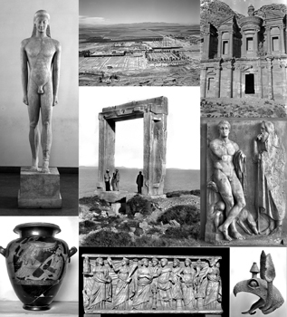

go to the corresponding images in Arachne
go to the corresponding data sets in Arachne
Prof. Dr. Ortwin Dally, Prof. Dr. Reinhard Förtsch
Based on their tradition in research, the DAI holds the largest and oldest stocks of images worldwide within the field of archaeology of the Mediterranean countries. These images are digitized and made accessible in a long-term plan, by the database Arachne, which is run by the German Archaeological Institute (DAI) and the CoDArchLab. Especially the oldest and historical most invaluable images are threatened by physical decomposition and destruction because of environmental influences, natural catastrophes like earthquakes and in the long run, manual use. Today's scientists have to research collections of each DAI's photo archive in person, which leads to gradual wear marks on the original material even upon careful handling. By that, even in the best case, the basic material is charged. Besides these problems of conservation, the deficit of development is obvious within the information, which is included in the negative holdings. The structuring schemes of the photo libraries cannot replace a structured subject indexing. The potential of the glass negatives, belonging to the DAI has to regarded, not only as threatened, but also as lying fallow.

The project started in 2006 by editing the glass negatives from the departments of the German Archaeological Institute in Athens, Istanbul and Cairo (Emagines1). In 2008 a second project phase continued the work, by dealing with the negatives from Rome, Madrid, the headquarters in Berlin and the Eurasia-Department (Emagines2). The subject of the third phase of this project, which is funded by the DFG, is 40,000 more glass negatives, which are threatened immediately by physical degradation. These negatives are situated in the departments of the German Archaeological Institute in Athens, Berlin and Rome. Besides the pure digitization and development of these negatives, the project aims the improve of integration in the semantic web by extending the CRM- implementation in Arachne and the integration in other web resources like Perseus, CLAROS and Prometheus. The installation of an open-access-area for all of the 120,000 scans within the project and the implementation of the Creative-Commons-License are new aims of the third project phase. By the programming of a module for image and object identification (URN), every image shall come to be clear and permanent citable. Furthermore a multilingual user-surface shall be created.
The negatives mostly contain historical images of sculpture, topography and architecture, much of which no longer exists in its former condition. The holding is qualitative and quantitative a unique stock, even international compared to the Mediterranean countries. The aim is a permanent digital conservation of the information of the glass negatives and the database related development on the internet via Arachne. To avoid exposing the fragile contents from the risks of long-distance transport, the images are being scanned in the departments of the German Archaeological Institute (DAI) in an on-going process. The scanned images are then sent to the CoDArchLab for digital processing, entry into a database and long-term storage on the SAN of the University of Cologne for the DAI. The resulting documentation-complex is a centralised scientific of the DAI which can be accessed by web.
About 92,000 (week 32 in 2010) glass negatives are currently available in Arachne. About 53,000 of these belong to the Emagines2 project. A fuzzy meta search for 'D-DAI-ATH', 'D-DAI-IST', 'D-DAI-ROM', 'D-DAI-EUR', 'D-DAI-Z', 'D-DAI-MAD' and 'D-DAI-KAI' leads to an overview of about 44,000 object records of different categories, to which the glass negatives are referred. The glass negatives can be referenced through 92,000 records using image-navigation.